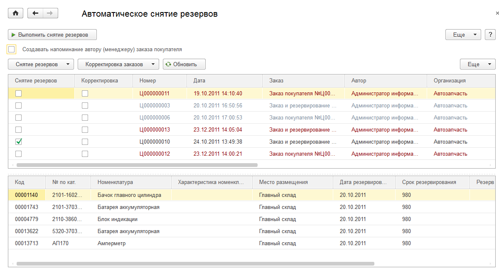

Позволяет формировать документы снятия резервов по заказам покупателей с истекшим сроком резервирования. В результате выполнения обработки по выбранным пользователем документам Заказ покупателя формируется набор документов Снятие резервов заказов покупателя.
Флажком Снятие резервов в строках списка заказов помечаются заказы, для которых требуется сформировать снятие резервов.
Флажком Корректировка заказа в строках списка заказов помечаются заказы, для которых при снятии резерва требуется выполнить корректировку количества заказанного товара (флажок Корректировка заказа в документе).
Цвет строк заказов имеет следующее значение:
По нажатию на кнопку Выполнить снятие резервов создаются новые документы Снятие резервов заказов покупателя по выбранным в списке заказам. Заказы с одним и тем же контрагентом группируются в один документ. Если установлен флажок Создавать напоминание автору (менеджеру) заказа покупателя, то для каждого из заказов формируется напоминание о списании резерва менеджеру, указанному в заказе, а если менеджер не задан - то автору документа. Документы, сформированные в результате работы обработки, будут отображены на форме обработки.
Для автоматического формирования напоминаний имеется регламентное задание "Напоминание про снятие резервов". Задание формирует напоминания автору (менеджеру), указанному в заказе, о необходимости снятия просроченных резервов. Напоминания формируются только для заказов, в которых указан срок снятия резерва, в том числе и для предоплаченных заказов.
Для автоматического снятия резервов имеется регламентное задание "Автоматическое снятие резервов". Задание формирует документы снятия резервов в фоновом режиме по алгоритму данной обработки. В настройках регламентного задания может быть задано, будут ли создаваться напоминания автору (менеджеру) о списании резерва, необходимости корректировки заказанного количества, необходимость снятия резервов по предоплаченным заказам. Действие настроек распространяется на все документы, формируемые в результате выполнения задания.